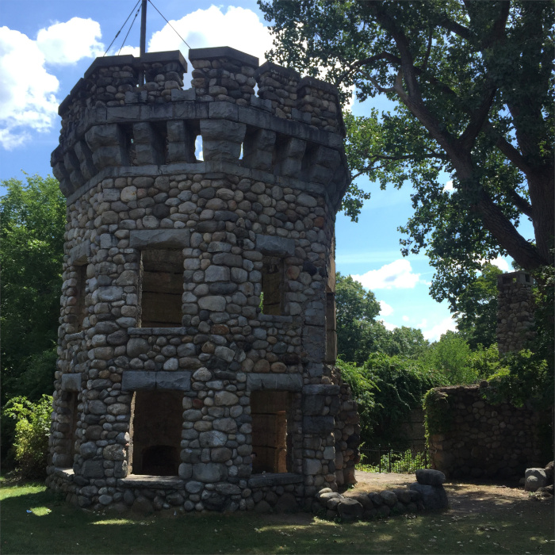
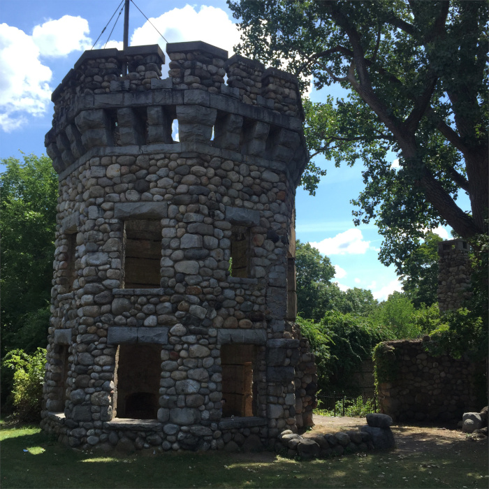

Scarlet Hill
The Scarlet Hill walk starts out in a gorgeous field with views of grazing horses. The field opens up into rolling hillsides with a speckling of trees. Take your time and examine the uncut grass to observe the many gorgeous wildflowers. There is a quick but steep path up Scarlet Hill that leads to an amazing overlook. This Eastward overlook has a view of the MIT Haystack Observatory and miles of trees. The view of trees framed by the faint outline of blue mountains coupled with a picturesque view of the stables, makes for a gorgeous walk.
The Scarlet Hill is a quick 10 minute hike. Park at the end of Shattuck Street and wear boots because some parts of the trail may be wet.


 
